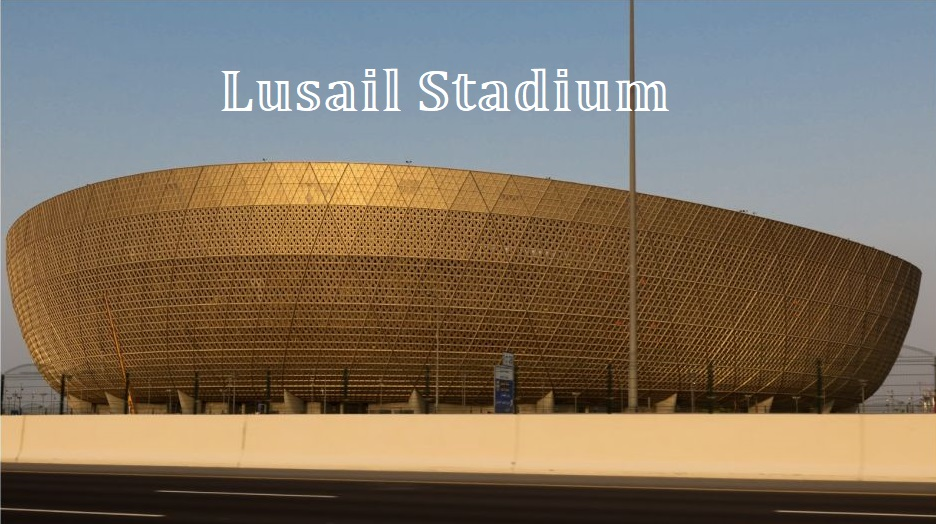

Rozpoczęcie mundialu:
Powrót
Miasto: Lusajl
Pojemność: 80.000
1/8 finału, ćwierćfinał, półfinał, finał
Będzie to największy obiekt mistrzostw. Został otwarty 22 listopada 2021. Obejrzymy na nim aż dziesięć spotkań. Po turnieju jego znaczna część również zostanie zdemontowana. Wielki obiekt zmieni się w kameralny stadion, a wokół niego powstaną sklepy, kawiarnie, obiekty sportowe i edukacyjne oraz przychodnia zdrowia.
